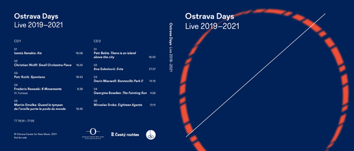
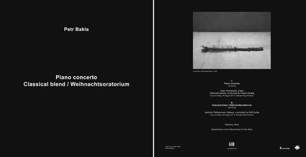

ABOUT

Born in 1980 in Prague, Petr Bakla often employs basic pitch-based material (typically the chromatic and the whole-tone scales) in his compositions. He is interested in constructing situations and structural contexts in which these frugal musical elements can acquire a unique expressiveness and energy. A frequent feature of Bakla's work is a simultaneous course of two musical/sound layers which, although usually markedly differing in dynamics to allow for a sense of "figure and background", are not mutually subordinating - they are of equal importance, their "friction" creating specific tension and ambiguity. Bakla's music has been performed in Austria, the Czech Republic, France, Germany, Italy, the Netherlands, Poland, Spain, Switzerland, Armenia, Ukraine and the United States (NYC, Boston, San Diego ao), in many cases commissioned and/or performed by distinguished musicians.
NEWS
2022 April 26th 28th:
Two instances premiered by Andrej Gál and Daan Vandewalle on the occasion of Petr Kotík's 80th birthday PLATO Ostrava (26th), DOX+ Prague (28th)
2021 December 22th:
There is an island above the city for orchestra on CD! performed by Prague Radio Symphony Orchestra and Peter Rundelpart of Ostrava Days Live 2019-2021double-CDget your copy here
{kind=link}
2021 June 11th:
Dog Variations performed by Neues Klaviertrio Dresden Hygiene-Museum Dresden, Germany
WORKS
SELECTED WORKS:
Piano Concerto No. 2 (2021) for piano and 8 instruments [pdf][mp3] [info]
There is an island above the city for orchestra (2018) [pdf] [mp3][info]
CDs
Hover to read, click the link to listen!

Ostrava Days Live 2019-2021 (Ostrava center for new music 2021) contains: There is an island above the city (2018) available throughwww.newmusicostrava.cz

Young Blood (Czech Music Information Center 2005 contains: Wind Quintet (2005) available through www.musica.cz

Music of Ostrava Days 2013 Live (Ostrava Center for New Music 2015) contains: Piano Concerto (2010-12) available through www.newmusicostrava.cz

Music of Ostrava Days 2009 Live (Ostrava Center for New Music 2010) contains: Material and Dreams (2009) available through www.newmusicostrava.cz

Ostravská Banda On Tour (MutableMusic 2011) contains: Serenade (2010) available through www.mutablemusic.com

Piano Concerto, Classical blend / Weihnachtsoratorium (LP, GOD Records 2016) featuring a photo by Ivan Pinkava available through www.godrec.com